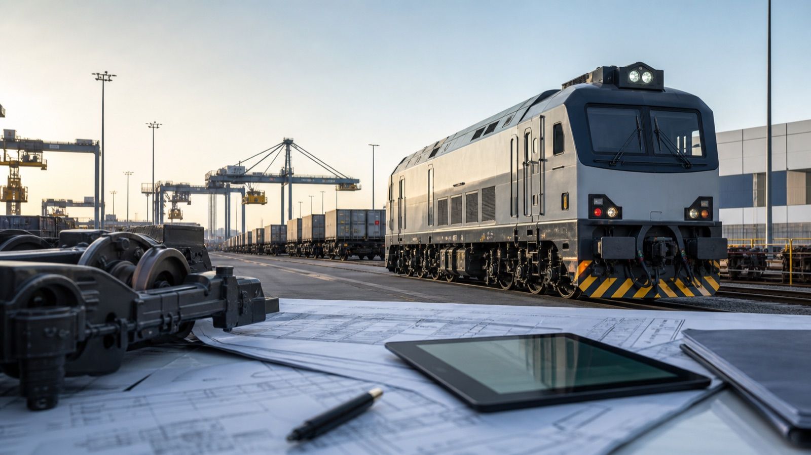

Locomotives and rolling stock
Support for traction rolling stock procurement, modernization, service programs, warranty terms and spare parts.

We take on supply projects where market, technical, contract, payment, warranty and logistics constraints must be handled together.
Support for traction rolling stock procurement, modernization, service programs, warranty terms and spare parts.
Components, assemblies, repair kits, depot equipment, technical acceptance and manufacturer coordination.
Supply for warranty and post-warranty service, availability of critical parts and service obligations.
Production lines, units, technological assemblies and complex procurement with acceptance and testing requirements.
Equipment for infrastructure projects requiring supply, service, warranty and execution schedule alignment.
Projects involving several jurisdictions, currencies, banking, sanctions, transport and documentary constraints.
We do not sell a universal catalogue. First we define technical parameters, origin country, preferred timelines, payment terms, warranty expectations, service and constraints. Then we select suppliers and the negotiation structure.
This is especially useful when the customer needs more than equipment purchase: they need a controlled and protected project.
The industry may differ, but the logic of a complex supply transaction repeats: verify the supplier, align the technical scope and protect commercial terms.

We check availability, compatibility, timing, warranty obligations, packaging, documents and repeat supply capability.

We align acceptance control points, testing, technical comments and the procedure for resolving non-conformities.
We account for origin country, payments, documents, sanctions restrictions, logistics and service support.
For railway and industrial equipment, price and delivery time are not enough. Supplier capability after handover is just as important.